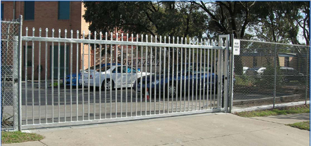

Rolling Gate - Installation, Repair and Maintenance
Rolling Gate - Installation, Repair and Maintenance
Sliding Gates for Communities , Schools , Businesses & Government
All aluminum gate
frames are supported from a heavy duty aluminum track by two sealed stainless steel gate trucks. Gate trucks are bolted to two truck hanger brackets which are then bolted to mounting posts.

New Jersey Gates repair , Rolling Gate repair storefront gate fin NJ gates repair install gate , gate operator , gate service , lubrication gates. roll up gate roll down gates new jersey gate 24/7 , 24 hour gate services